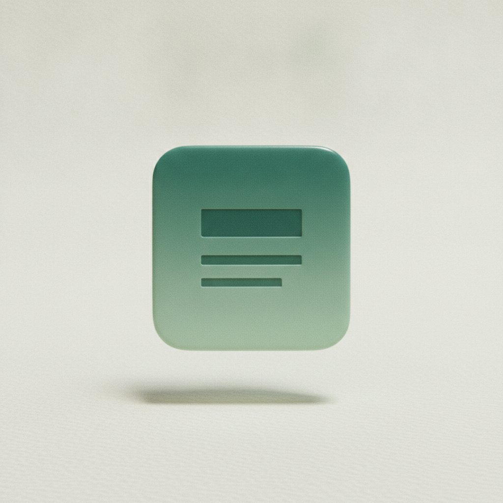

Branch previews
Every editor session now gets an isolated preview URL with its own deploy. Share before you merge.
A visual CMS for teams that ship code
Non-devs edit the live site in place — copy, layout, components, all of it. Every change leaves as a clean pull request your engineers actually want to merge.
The Friday Build
One email a week on the things we shipped, what broke, and what we learned fixing it.
Marketing and engineering ship the same site at
Most CMSes give marketing a sandbox that drifts from the real codebase. Pageboard renders your actual components, so what a writer edits is the thing that ships — no parallel content store, no sync job, no surprises in production.

Pageboard mounts your real React or Vue components. The editor is your design system, not a generic block kit.
Every edit is a reviewable change to your source files — props, copy, layout — committed to a branch, not a database.
Writers can only change what you allow. Lock structure, expose copy — your components define the editing surface.
Edit in place
No fields, no admin panel, no hunting for the right row. Marketing opens the live page, clicks the headline, and types. What you see is exactly what visitors get.
Team $24/seat
Everything in Starter, plus review workflows and roles.
Start free trial export function Hero() {
return (
<Section eyebrow=- "The weekly newsletter"+ "The Friday Build" title=- "Get the newsletter"+ "Get the list" cta="Join" />
)
}Ships as code
When a writer hits save, Pageboard opens a branch, commits the change to your source files, and opens a PR. Your engineers review it the same way they review everything else — diff, comment, merge.
No content database to back up. No webhook to debug at 2am. The repo is the single source of truth, and Git history is your audit log.
Branch previews
Every edit gets its own preview URL. Share it, get sign-off, run your checks. Nothing reaches production until the PR is merged — and rolling back is one revert.
Preview ready — edit/friday-build
acme-friday-build.pageboard.app · built in 6.2s · now
Approved by dan (eng)
11m ago
Merged to main — deploying production
commit a91f0c2 · 14m ago
Wrap the components you already have. No re-platforming, no content migration.
Add one wrapper around your app. Pageboard discovers your components and their props automatically.
A single prop opts a field into the editor. Everything else stays locked behind code review.
Writers edit the live page; their changes land as PRs in your repo. You connect the deploy you already use.
Every editor session now gets an isolated preview URL with its own deploy. Share before you merge.
The SDK now mounts Vue single-file components alongside React. Same in-place editing, same diffs.
Expose a prop as editable while keeping structure, spacing, and logic strictly in code.
"Our marketing team hasn't filed a copy-change ticket in four months. They just edit the page. Eng reviews the diff."
"We deleted our whole CMS and a sync service with it. The site is just the repo now. Everything is faster and nothing drifts."
Pageboard renders 1.4M live edits across 2,300 repositories — every one a reviewable commit.
Keep the rigor of code review. Lose the bottleneck. Pageboard installs in an afternoon.
No. Pageboard edits your real source files in your repo. Uninstall the SDK and your code is exactly what it would be without us — just components and props.
Only the fields you expose. Everything else is read-only in the editor, and every change still goes through your normal PR review and CI before it can reach production.
React and Vue today, with Svelte in beta. We open PRs against any Git host and trigger the deploy pipeline you already run — Vercel, Netlify, or your own CI.
SSO and SCIM on the Team plan, with per-branch and per-component permissions. Because changes are commits, your existing branch protection rules apply unchanged.